Sample Images for DTD and FGVC Aircraft Dataset
Sample Images for DTD

Caption for DTD_Sample.png
Sample Images for FGVC Aircraft Dataset

Caption for FGVC_Sample (1).png
Naive Approach
Per Class Accuracy after Each Task for Naive DTD

Caption for naive_acc_dtd.png
Per Class Accuracy after Each Task for Naive FGVC Aircraft Variants

Caption for naive_acc_var.png
Average Relative Forgetting for Naive DTD

Caption for naive_forget_dtd.png
Average Relative Forgetting for Naive FGVC Aircraft Variant
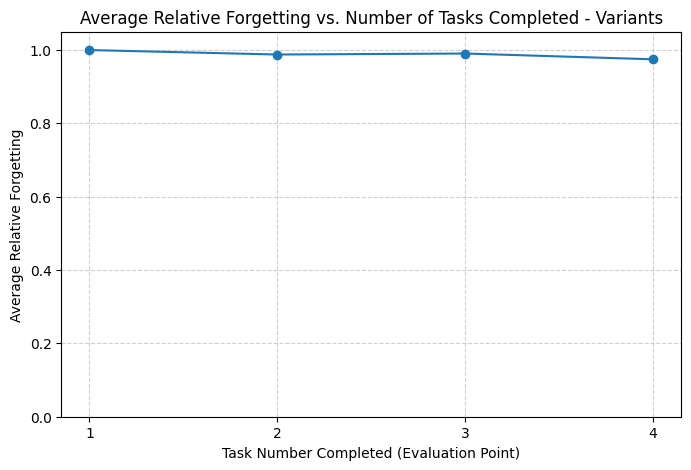Caption for naive_forget_var.png
Replay
Per Class Accuracy after Each Task for DTD with Replay
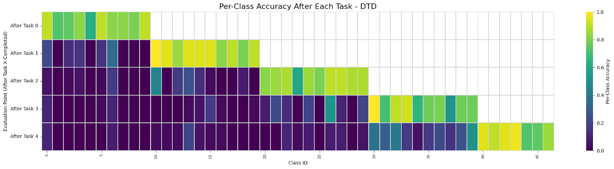Caption for replay_acc_dtd.png
Per Class Accuracy after Each Task for FGVC Aircraft Families with Replay
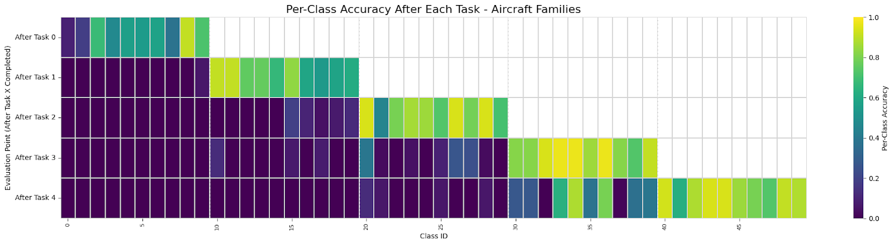Caption for replay_acc_fam.png
Per Class Accuracy after Each Task for FGVC Aircraft Variants with Replay
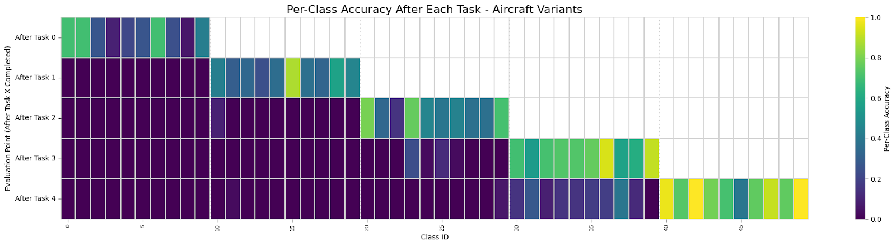Caption for replay_acc_var.png
EWC and Replay
Per Class Accuracy after Each Task for DTD with EWC and Replay
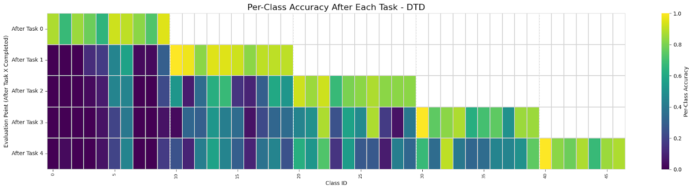Caption for replay_ewc_acc_dtd.png
Per Class Accuracy after Each Task for FGVC Aircraft Families with EWC and Replay
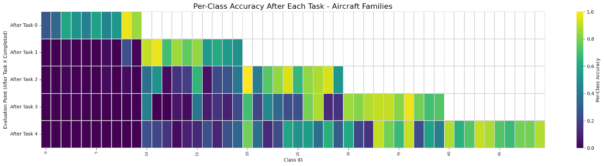Caption for replay_ewc_acc_fam.png
Per Class Accuracy after Each Task for FGVC Aircraft Variants with EWC and Replay

Caption for replay_ewc_acc_var.png
Average Relative Forgetting with Replay and EWC for each Granularity

Caption for replay_ewc_forgetting.png
Average Relative Forgetting with Replay for each Granularity
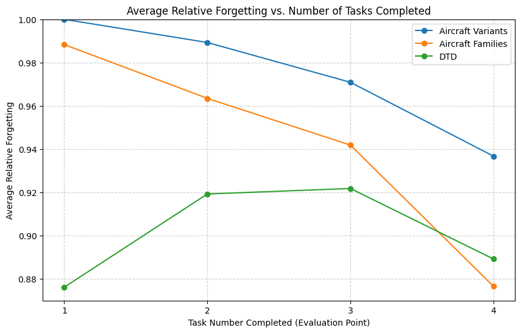Caption for replay_forget.png
Confusion Matrices
Confusion Matrix for DTD Naive Approach
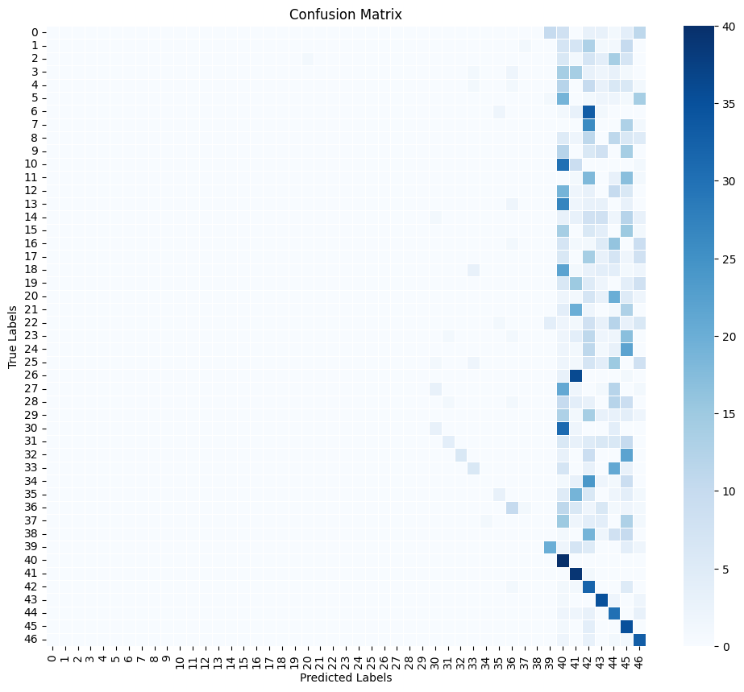Caption for replay_forget.png
Confusion Matrix for FGVC Aircraft Variants Naive Approach

Caption for replay_forget.png
Confusion Matrix for DTD with Replay
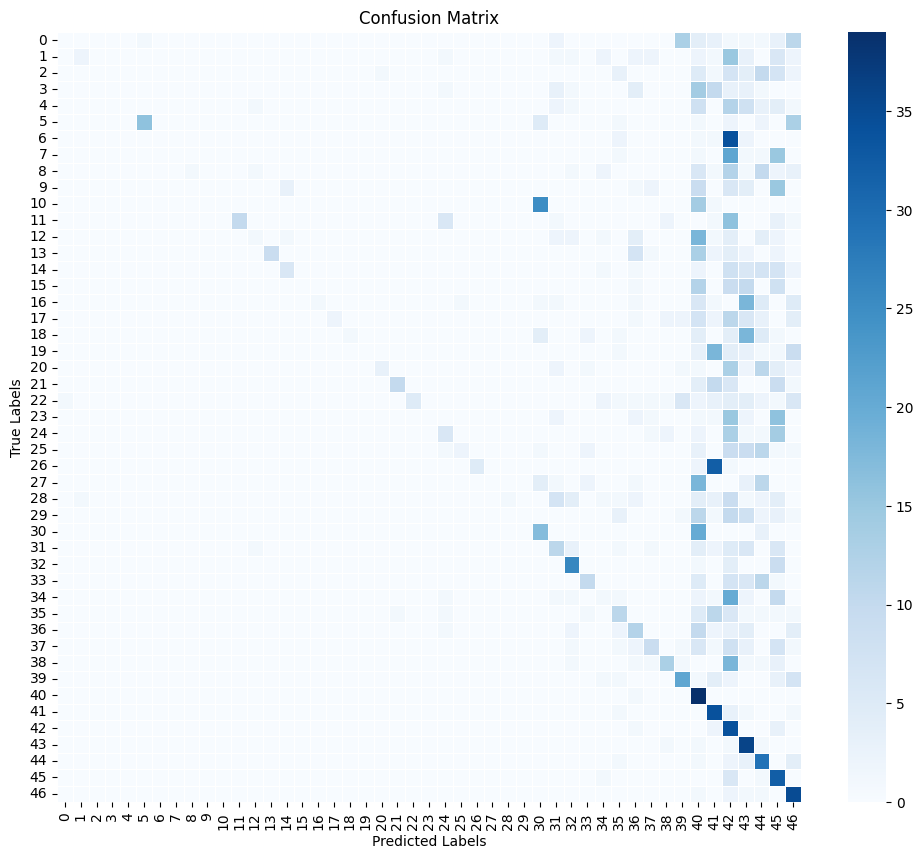Caption for replay_forget.png
Confusion Matrix for FGVC Aircraft Families with Replay
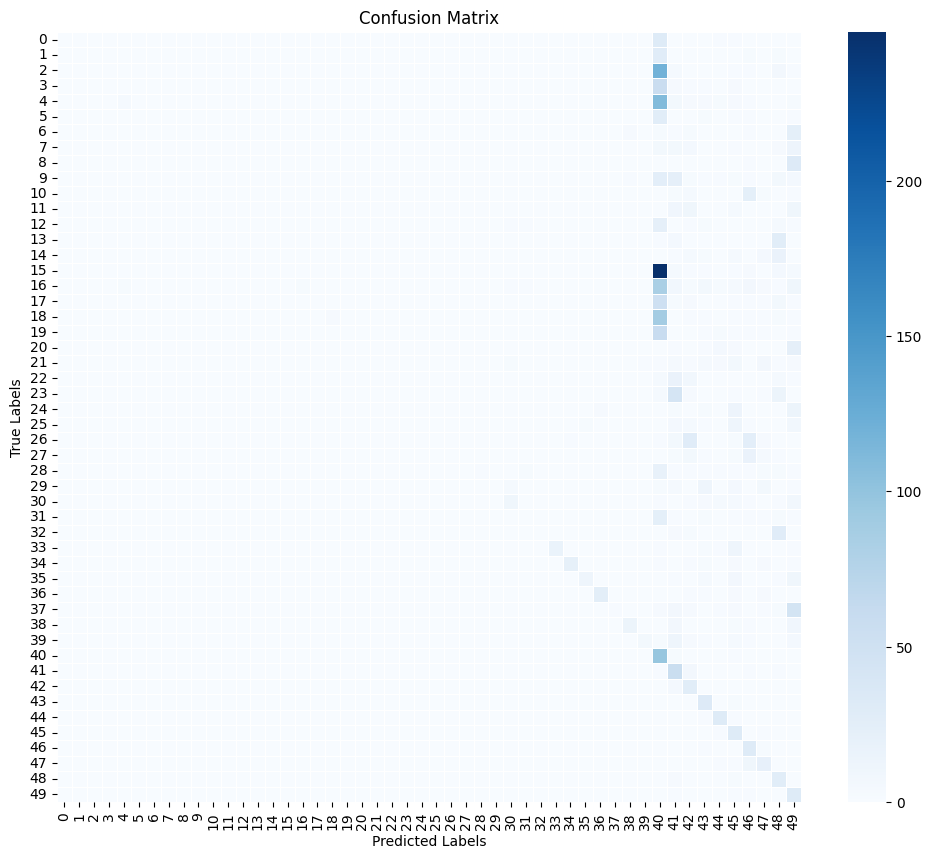Caption for replay_forget.png
Confusion Matrix for FGVC Aircraft Variants with Replay
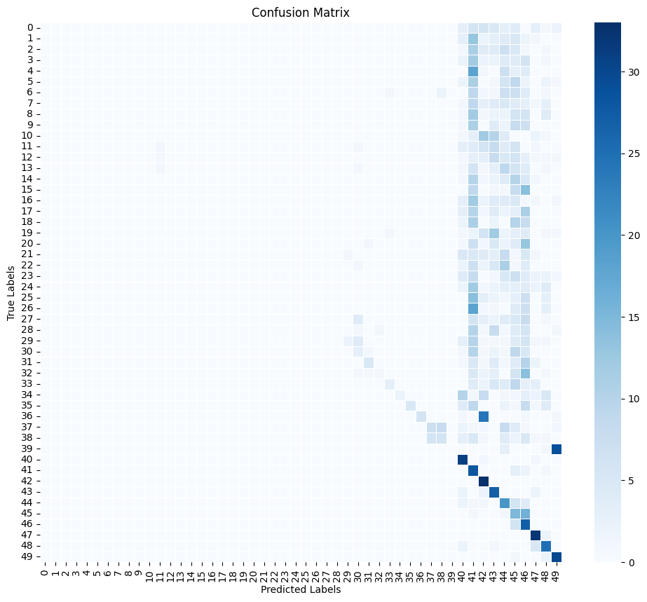Caption for replay_forget.png
Confusion Matrix for DTD with EWC and Replay
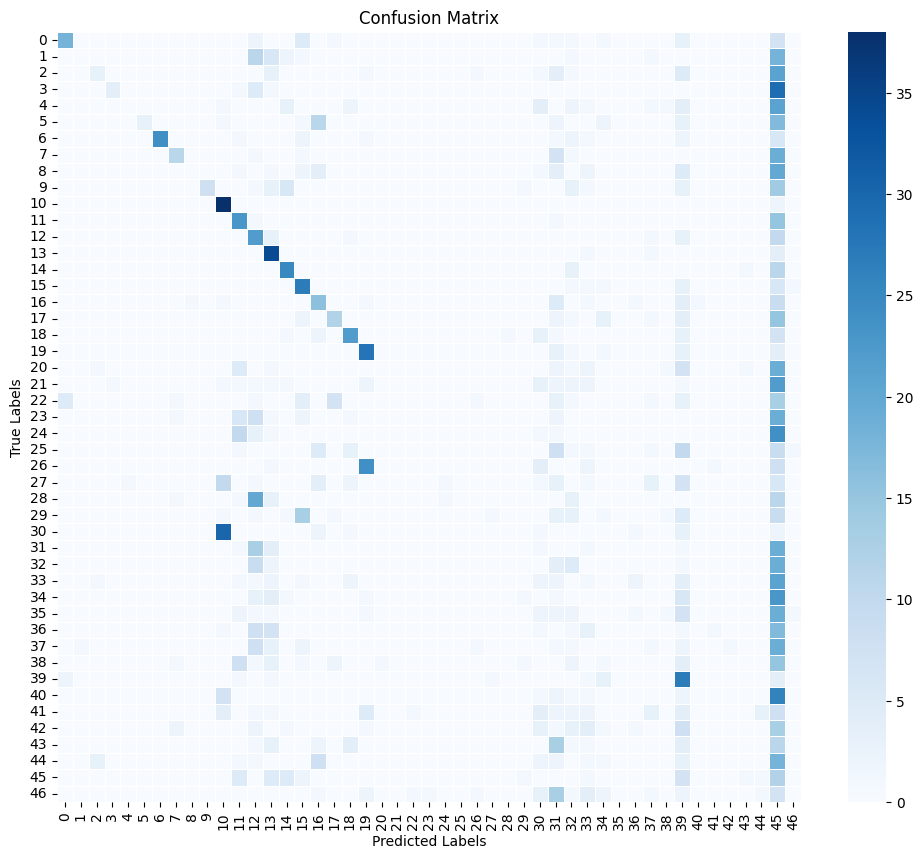Caption for replay_forget.png
Confusion Matrix for FGVC Aircraft Families with EWC and Replay
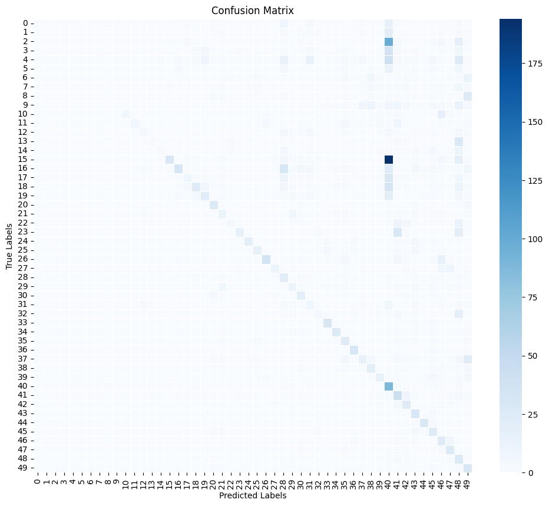Caption for replay_forget.png
Confusion Matrix for FGVC Aircraft Variants with EWC and Replay

Caption for replay_forget.png
Backward Transfer
Backward Transfer for Naive
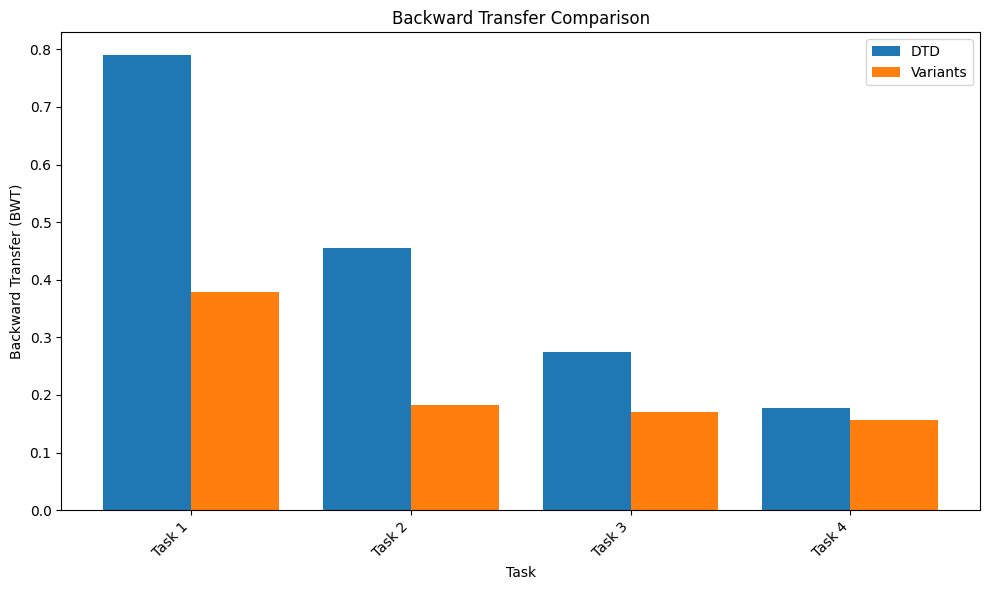Caption for replay_forget.png
Backward Transfer for Replay
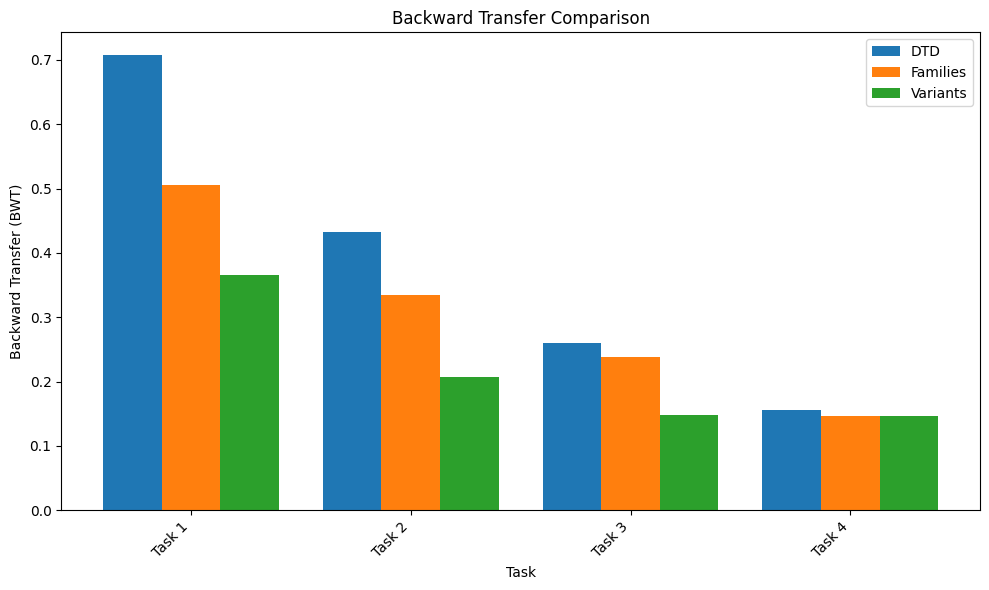Caption for replay_forget.png
Backward Transfer for EWC and Replay

Caption for replay_forget.png